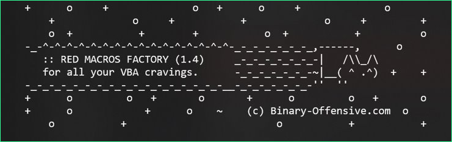
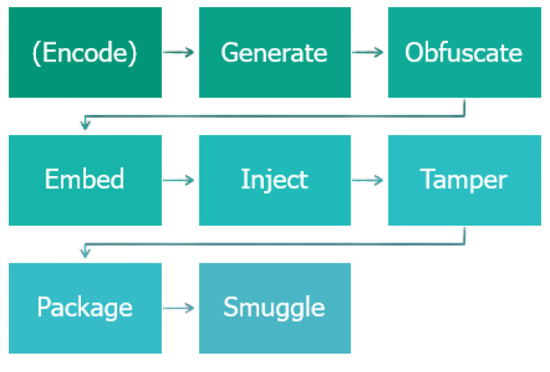

Red Macros Factory
Binary-Offensive.com
@mariuszbit
mgeeky
mb@binary-offensive.com
Read more

Red Macros Factory
» Capabilities overview
» Quality of Life Improvements
» Formats supported
» Batteries included
generate.exe
obfuscate.exe
embed.exe
inject.exe
tamper.exe
convert.exe
smuggler.exe
lnker.exe
chmer.exe
package.exe
lolbaser.exe
macroless.exe
shellcode2vba.exe
encode.exe
And more!
» Upcoming features
» 30+ kLOC: Python + VBA
» 3 years of active R&D

Capabilities overview
» 3 years long Research-driven development
» Initial Access payload generation time reduced from days to minutes
» Battle-tested quality: used during numerous engagements, from a Red Teamer to Red Teamers
» One command to generate fully-fledged, customisable Malicious document with:
» 25 different VBA infection strategies (so called“generators” – File Dropper is considered one)
» 23 different command execution tactics (so called“launchers” – Wscript.Shell considered one)
» 10 exotic ActiveX-based autoruns (e.g.,InkPicture1_Painted
» Full support for shellcode (x86/x64) / .NETassemblies / URLs for payload staging
» Sandbox execution-guardrails
» Obfuscated VBA macro with lowered entropy forML-based detection rate reduction, VBE/JSE script encoding
» Automated Office documents generation / backdooring(Excel/Word/PowerPoint/Publisher/Visio/Project/Access)
» Translation of VBA scripts into WSH ones (VBS, SCT,HTA, WSF, WSC, …).
» VBA Stomping/Purging/anonymization/vbaProject.binmetadata presetting trickery applied on generateddocuments
» Up to 5 minutes to get advanced weaponized Officedocument or WSH script.